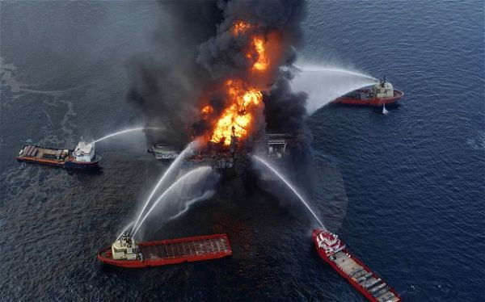
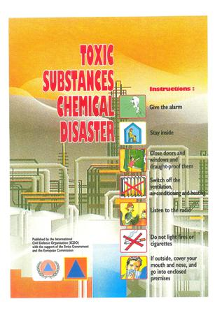

Creative Multimedia Programming Student Report on Prevention From Chemical Accidents.

10/03/2017
Introduction
The process of transforming matter can be natural or artificial and chemistry has enabled man to satisfy his basic needs and constantly improve his living conditions. Chemical substances can however also be dangerous to man and his environment. Depending on the quantities involved, their degree of toxicity, corrosive power, explosive force, inflammability or even radioactivity, they can cause considerable damage. It is therefore important to know the risks linked to chemical substances, to keep to the prescribed directives for handling them and to establish prevention, protection and intervention measures in order to prevent these risks from developing.
The chemical substances used in the home and workshop are not generally dangerous, as long as the instructions for their use and storage, which usually come with the original container, are followed.
It is especially important to keep these products out of reach of children and not to transfer them to containers used for storing food.
Large quantities of these dangerous substances are produced and used in industrial and commercial enterprises. Their careless handling, transport and storage entail serious dangers for man and the environment. It is important to guard against these risks by taking the necessary preventive, precaution and protective measures. To these peace time risks are added the menace of chemical and biological weapons in times of war or crisis (terrorism), despite international laws restricting or forbidding their use. Protective measures against these are generally designed and taught by the military within the framework of civil protection.
Preventive and protective measures
Major accidents involving chemical substances have local effects, but in exceptional circumstances they can affect whole regions because of weather conditions. Scientific technical developments have made it possible to prevent such dangers and therefore to protect people from them. The priority must be on prevention, but a positive result can only be assured if there are strict guidelines for using and handling these products, as well as professional knowledge, both of which are indispensable in this very complex field.
Intervention and rescue measures
When an accident involving chemical substances that could endanger life or the environment occurs in a chemical works or installation, those in charge of it should immediately take the following planned measures:
- Deal with the causes of the accident and implement the safety measures which will minimise its consequences.
- Immediately inform the relevant local authorities of the accident.
- The local or regional authorities of the area in which the installation is located are responsible for informing the public, sounding the alarm if need be, and deciding upon the instructions to be followed by the population. The local or regional governing body ensures the co-ordinated use of the civil and military means required to deal with the disaster. In the case of radioactivity, the technical co-ordination of the implementation of protective and rescue measures is assured by specialists who should be present at all political levels and in all the intervening squads, and work in collaboration with the personnel in charge of security at the installation affected.
At the community level, the measures required will usually involve the following:
- Instructing the public to stay in their houses, close all windows and doors, turn off the air conditioning and block all ventilation ducts, to listen to the radio and follow official instructions.
In times of war, additional measures are also taken.
- In exceptional circumstances, temporarily evacuating those directly at risk.
- Ensuring that nearby chemical products are well protected.
- Avoiding polluting drinking water (springs, groundwater).Turning off the water supply should this be necessary.
- Recuperating the water used to deal with the problem and which could have become harmful to the environment (tanks, water tankers, tankers).
- Making sure that, once the alarm is sounded, the public is informed, through news bulletins, of the dangers of intoxication, explosion and corrosion and that they know how to protect themselves.
The special conditions governing intervention and protection in a chemical accident mean that the toxicity of the emissions and the area at risk from toxic fumes must be readily determined.
This is urgent as the reaction time (critical phase) is extremely short. There exist mathematical tables, computer programmes and other tools which predict precisely how far the fumes will spread and enable the appropriate measures to be taken.
Rules of behaviour for the population
Rules of behaviour for the population
- Know the sound of the chemical alarm siren, the instructions to be followed and the action to be taken.
- Know and follow the instruction for the use and handling of dangerous chemical substances.
- Prepare and have at hand an emergency kit for the family in case evacuation becomes necessary and also reserves of water and food to last throughout the period, which could last several days, during which you have to remain confined at home.
- Plan and organise your confinement in hermetically sealed premises. This, especially for those living in the vicinity of a user or producer of dangerous chemical substances.
Recommendations for the use and handling of dangerous chemical substances at home or in the workshop
- Only buy and stock the quantities required in the near future.
- Replace when possible dangerous substances with less dangerous ones.
- Read carefully the instructions and warnings on the packaging before using a chemical product.
- Leave dangerous substances in their original packaging. Never transfer them into a container used for storing foodstuffs.
- Wear protective glasses when working with base substances or acids.
- When working with easily flammable substances keep away from naked flamescandles, incandescent heating wires, lit cigarettes, etc. that could ignite the vapours from these substances.
- Do not pour the remains of chemical products down the sink or toilets after using them but take them to a public waste collection centre.
- Keep chemical substances away from children.
In case of a major chemical disaster
- - Keep calm and do not panic.
- - Listen to the radio and follow official instructions. Inform your neighbours, especially the elderly and handicapped and assist them.
- - Stay inside, if at home, or shelter in a building and close all doors and windows. Seal all exterior openings and turn off the ventilation, air conditioning and heating.
- - Protect your mouth and nose, if in the open, with a wet cloth or a protective mask. Shelter in the nearest building and remain inside until otherwise instructed by the authorities.
- - Do not telephone as this overloads the system.
- - Follow the orders of the civil protection, fire service, police or other intervening services.
- - Eat only food stored inside a building, such as tinned food and preserves. Drink only from bottles or cartons.
- - Follow the instructions on the use of tap water.
- - If you are in a car, turn off the ventilation and close the windows. Listen to the radio and shelter in the nearest building. Follow the instructions of the authorities. If in public transport, follow the crew's instructions.
After the disaster
- - Follow the orders of the civil protection, fire service, police or other intervening services.
- - The evacuation of members of the public is unlikely in areas with buildings and homes that can be hermetically sealed. The decision to evacuate or stay will be taken by the relevant political authority (national or provincial government) who will organise the evacuation using all the civilian and military means at their disposal and in collaboration with the services responsible for the reception area. Follow the authorities' orders and instructions.
- - Taking all necessary precautions, assist neighbours and persons in need such as the wounded, children, handicapped and the elderly, in collaboration with the intervention and rescue teams.
- - The above objectives should be included in the necessary legislation on the protection of the public and the environment which lays down the obligations concerning the production, use, handling, transport and storage of dangerous substances. Protection of ground water and the air is also of primary importance.
- - In view of the potential dangers, it is most important that managers of firms and installations working with dangerous chemical products be fully aware of their responsibility and make constant efforts to ensure optimal security in this matter. This calls for close collaboration with official watchdogs and safety bodies and with the local and regional political authorities and their intervention services, especially the fire service and police as well as with the information and alarm centres of civil protection services.
Experience with toxic leaks, among others, has shown that the following specific preventive and protective measures should be taken:
- - Knowing the chemicals which are potentially dangerous, their production, use, storage, transport, handling and the threats they pose such as fire, explosions, leaks and uncontrolled reactions.
- - Requiring each firm to keep an inventory of these substances and to register them at the local and regional level.
- - Marking vehicles with the code number of the dangerous substance they are carrying and controlling transporters and storage installations.
- - Regulating the storage and destruction of household and industrial waste.
- - Installing an integrated warning system, at the local and regional level, to warn the public and army to protect themselves.
- - Establishing plans for alerting and enlisting the teams intervening locally, and assessing beforehand all potential risks from chemicals.
- - Training special technical advisors who will be immediately available to assist the chief of operations in case of an accident involving chemicals.
- - Establishing instructions and rules of behaviour for the public, military personnel and the intervening teams in times both of peace and war.
- - Keeping the public informed on the dangers of chemical substances and of the way to behave and act in case of a major accident or disaster, such as may arise from the use of chemical weapons.
- - Making available specialist protective equipment to the teams involved in the operation and the people at threat who cannot find shelter in suitable buildings or in civil protection shelters.
- - Creating, or ensuring collaboration with an existing institution which has access to a data bank and which could provide advice to firms, authorities and the intervening teams on the dangers, the protective measures to be taken and on how to deal with chemical substances and their damaging effects.

INTERNATIONAL CIVIL DEFENCE ORGANISATION
©Creative Multimedia Programming: Khizer Iqbal
Khizer Iqbal | Creative Multimedia Programming | Hdip | Limerick Institute Technology | CSS XML HTML
PHP Design Graphics Video Digital Brackets JavaScript LIT 3DGraphics 3D Graphics Modelling Animation Rendering Lighting Colour
Khizer Iqbal
 Creative Multimedia Progmramming
Creative Multimedia Progmramming